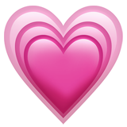
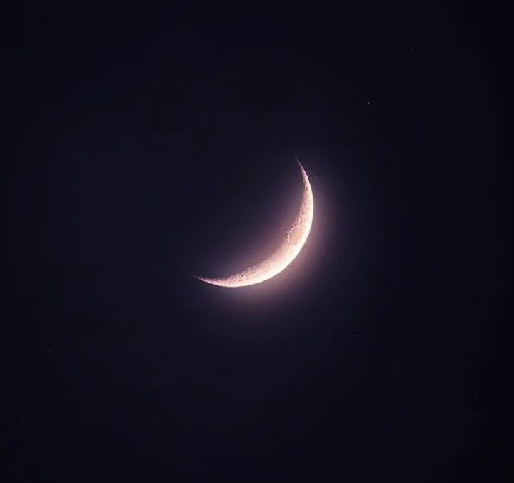

La confianza que no se forza, solo fluye
Primero que todo te quiero dar las gracias por tu amistad, quiero que sepas que te quiero demasiado, que sepas que te valoro demasiado.

¡Tu belleza es inefable nunca lo olvides!
Otra cosita, tu belleza es inefable, no se compara con nada en este mundo, tienes un cabello re hermosoooo. Unos ojos bien lindotes y una carita angelical toda linda.
Has llegado hasta el fin de la pagina.
Espero te haya gustado este regalito para ti, se que es mucho texto, pero muchas gracias por leerlo completo.